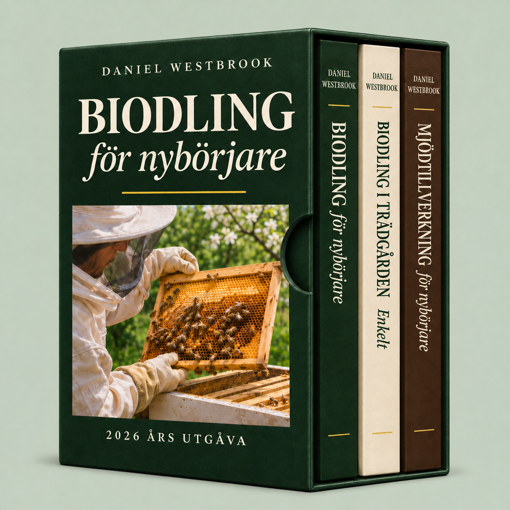

SAMLINGEN AV DANIEL WESTBROOK
Från ditt första bisamhälle till din egen honung.

Förstå. Observera. Utvecklas.
DITT MEDLEMSOMRÅDE
Din tid
Din tid
med bina
börjar här.
Vad roligt att du är här. Upptäck binas värld med kunskap som följer dig från första steget.
DITT PERSONLIGA BIBLIOTEK
Öppna mitt medlemsområde
Förstå grunderna. Ha bin i din egen trädgård. Upptäck konsten att brygga mjöd.
Läs alla tre böcker direkt eller ladda ner dem som PDF.
- 3
- Böcker
- 180
- sidor med kunskap
- Eget tempo
- För nybörjare